MOSAIC: Towards a Universal Latent Space for Computational Pathology Foundation Models
Under Review at WACV
Do independently trained pathology foundation models learn the same thing?
Central Hypothesis: Independently trained pathology foundation models learn different coordinate systems over a shared underlying morphological manifold.
If that holds, representations should be alignable, semantic neighbourhoods should survive alignment, features should transfer between models, and a downstream classifier should be able to live inside one shared space.
How similar are the representation spaces of 18 pathology encoders measured by 7 similarity metrics?
Does the pretraining objective (Vision SSL vs Vision–Language) drive latent geometry more than architecture?
Can the evaluated alignment methods align several models into one shared latent space?
Does the aligned space improve downstream MIL classification on 13 morphological, clinical, and molecular tasks?
Does a classifier trained on one encoder generalise to another encoder's features through the shared space?
A rigorous benchmark comprising 4,331 whole-slide images and 13 downstream tasks across 3 organ types. TCGA-RCC and CPTAC-LSCC are excluded from the reported slide count.
Subtyping and staging tasks that are visually apparent in tissue architecture.
A diverse landscape of 12 patch-level encoders and 6 slide-level encoders, covering Vision SSL, Vision–Language, and a supervised control.
Patch-level representation registry
| Encoder | Embedding | Visual Backbone | Pretraining Objective | Family |
|---|---|---|---|---|
| UNI2-h | 1,536-D | ViT-H/14 + Register Tokens | DINOv2 | Vision SSL |
| Prov-GigaPath | 1,536-D | ViT-g/14 | DINOv2 | Vision SSL |
| Virchow | 2,560-D | ViT-H/14 | DINOv2 | Vision SSL |
| Virchow2 | 2,560-D | ViT-H/14 | DINOv2 + Pathology-Specific Augmentations | Vision SSL |
| H-optimus-0 | 1,536-D | ViT-g/14 | DINOv2 | Vision SSL |
| GPFM | 1,024-D | ViT-L/14 | Multi-Teacher Expert Distillation | Vision SSL |
| CTransPath | 768-D | CNN + Swin-T Hybrid | SRCL Contrastive Learning | Vision SSL |
| CONCH | 512-D | ViT-B/16 + Text Encoder | CoCa: Contrastive + Captioning | Vision–Language |
| CONCH v1.5 | 768-D | ViT-L/16, 448px | Vision–Language Pretraining (TITAN Patch Encoder) | Vision–Language |
| KEEP | 768-D | ViT-L/16 | Knowledge-Enhanced Vision–Language Pretraining | Vision–Language |
| MUSK | 1,024-D | BEiT-3 Multimodal Transformer, 384px | Masked Modeling + Vision–Language Alignment | Vision–Language |
| ResNet50 | 1,024-D | ResNet-50 through Layer 3 | ImageNet-1K Supervised Classification | Control |
An overview of the 7 similarity metrics and 5 alignment methods used to compare and align cross-encoder representations.
Evidence browser
Explore the released findings without scrolling through a wall of figures.
Select a research question, then switch cohort, patch grid, or evaluation view.
Every panel is regenerated from the released tables by
scripts/render_figures.py.
Patch encoders are compared only within matched coordinate grids; slide encoders can be compared directly across grids.
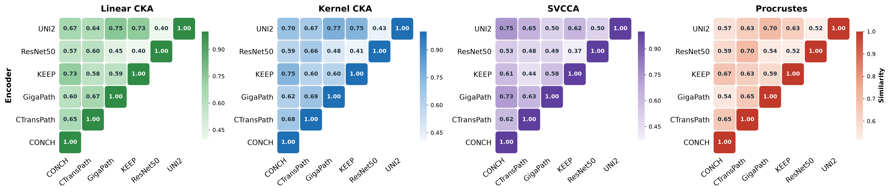
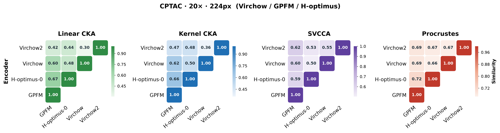
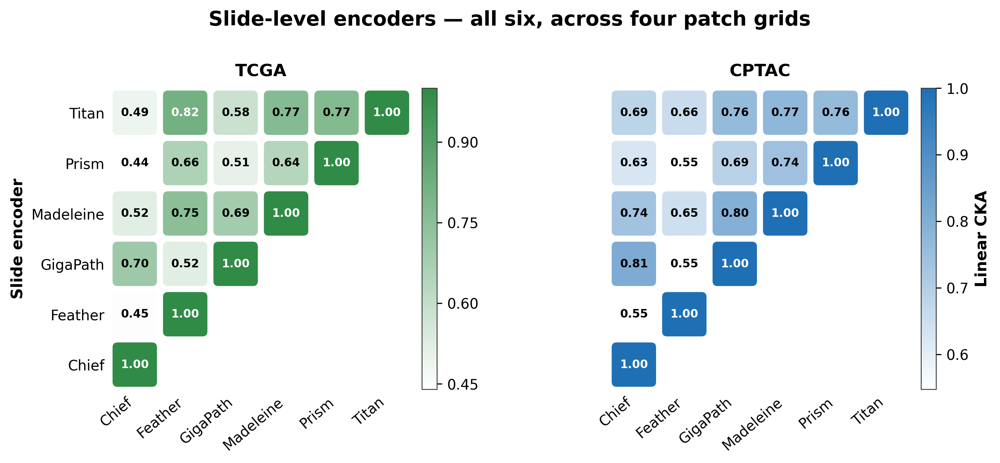
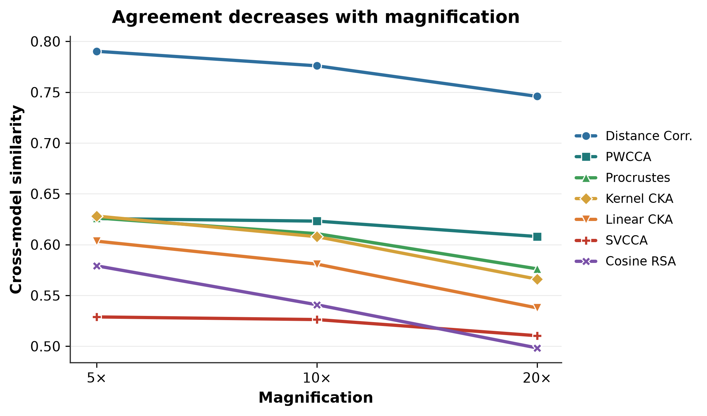
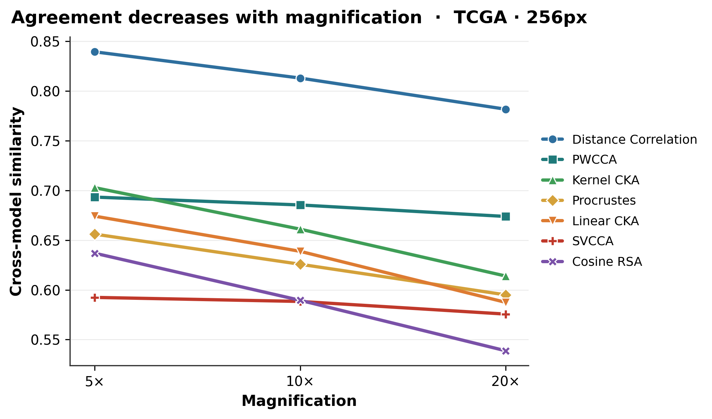
Forward hooks expose the relationship through depth rather than only at the final embedding.
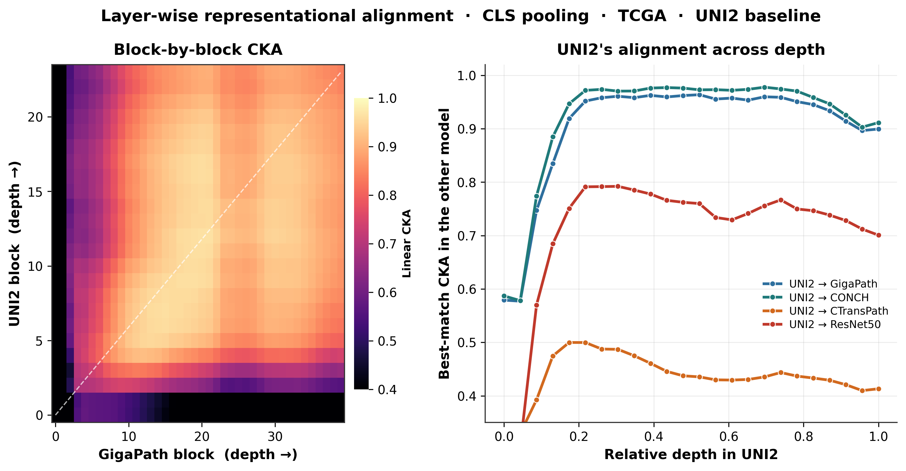
Alignment quality and identity retrieval expose different sides of the shared-space trade-off.
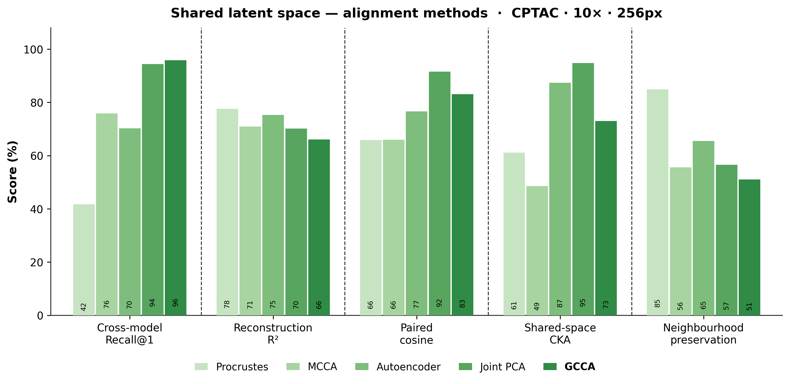
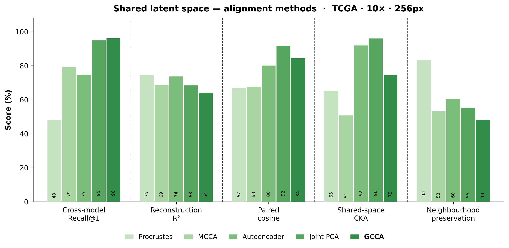
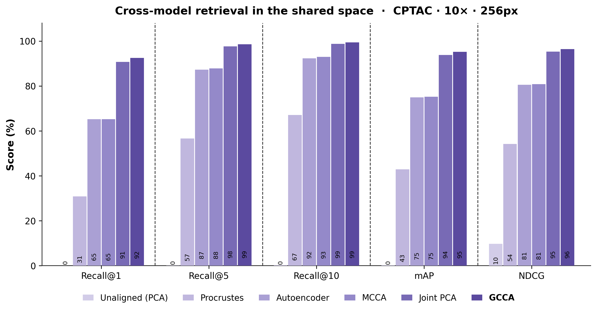
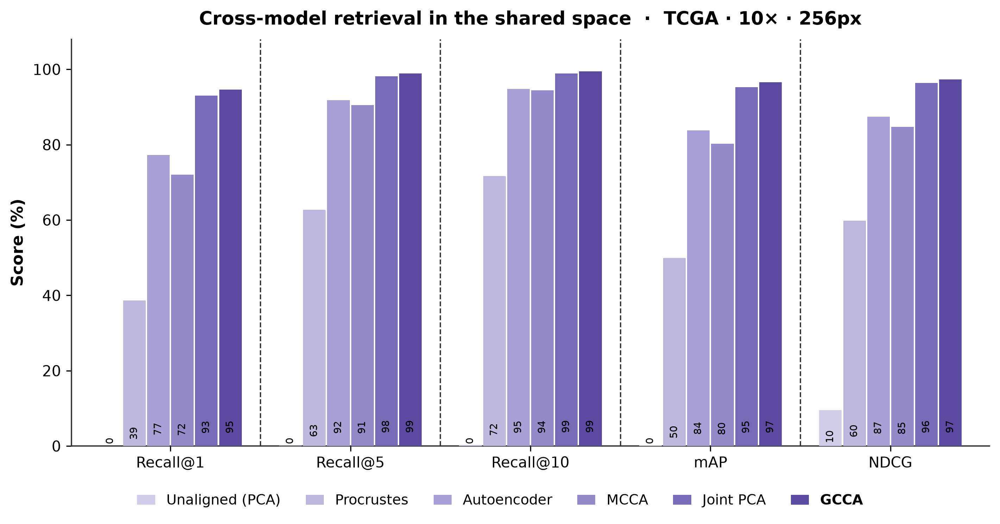
Thirteen tasks compare the best fixed single encoder, raw concatenation, and MOSAIC under the same MIL protocol.
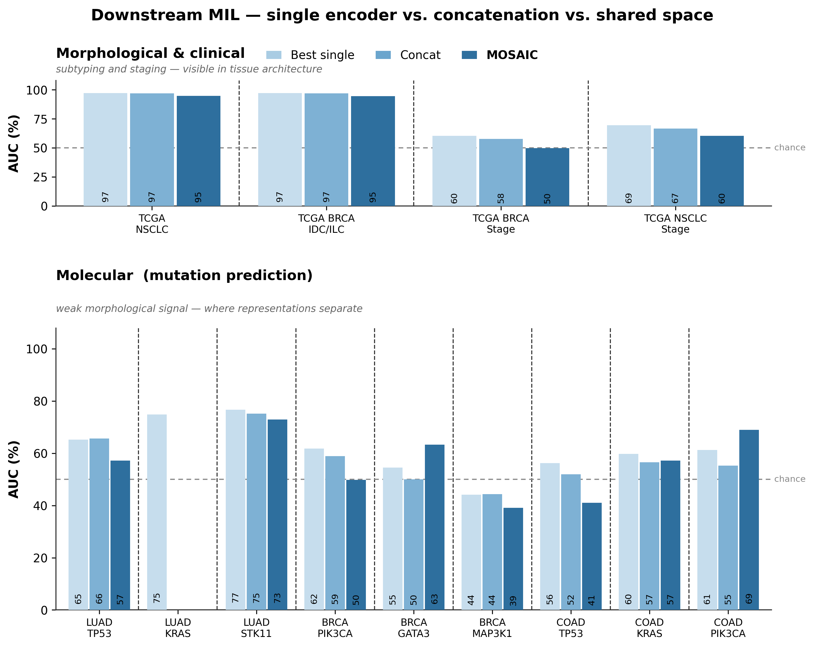
Directional source-to-target translation tests whether the shared latent space retains model identity and neighbourhood structure.
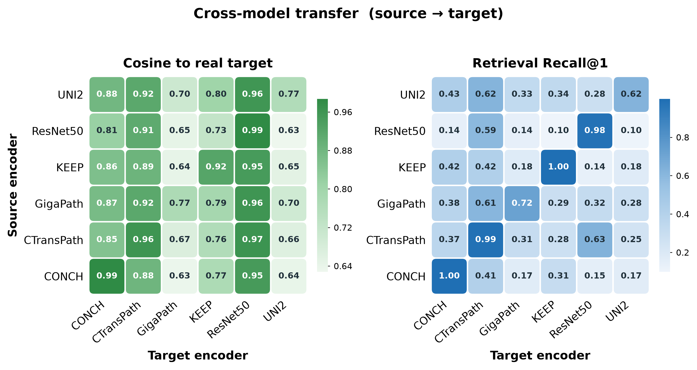